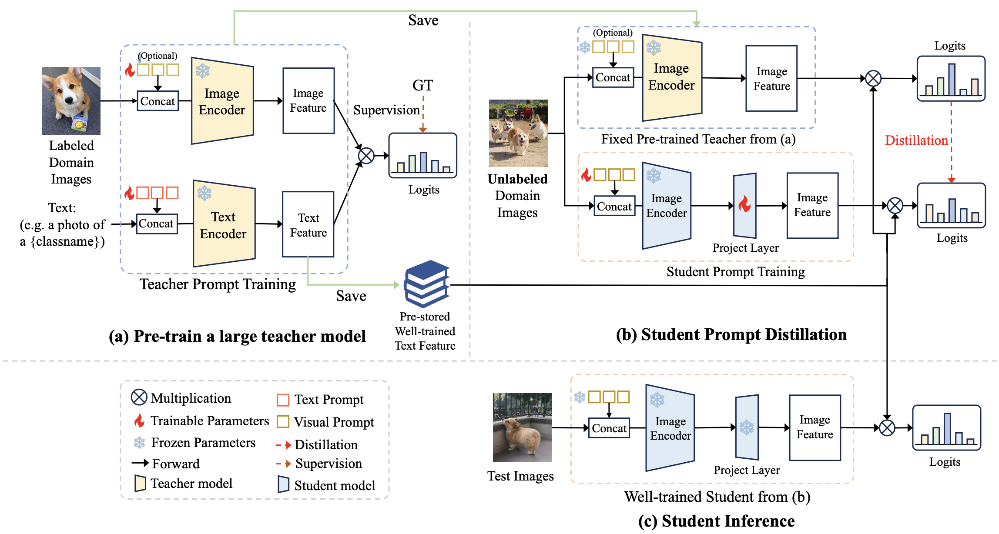
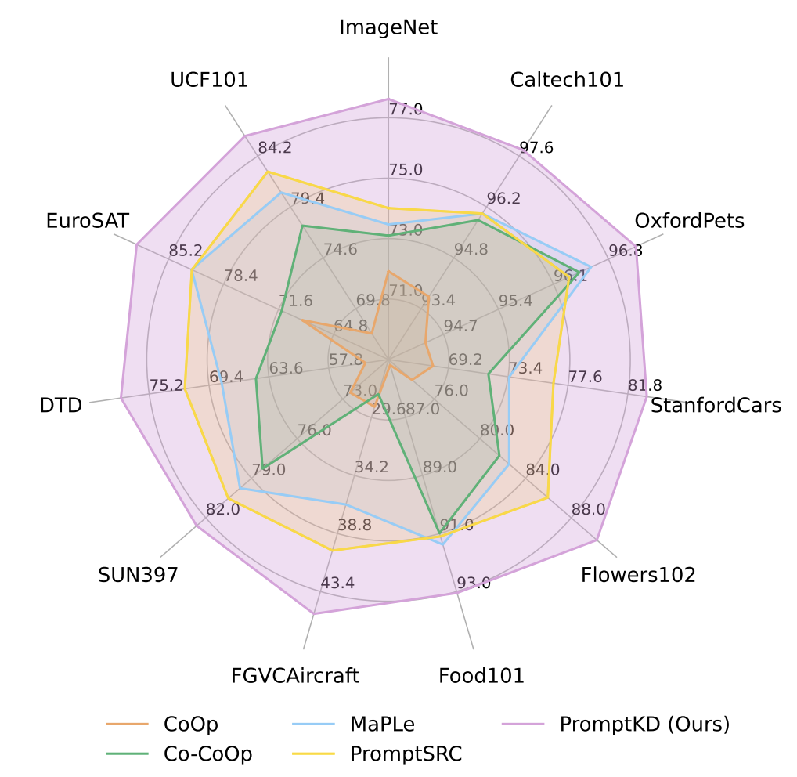
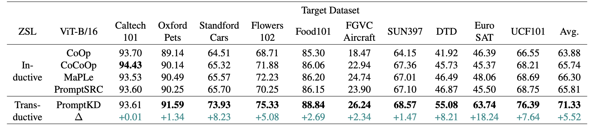
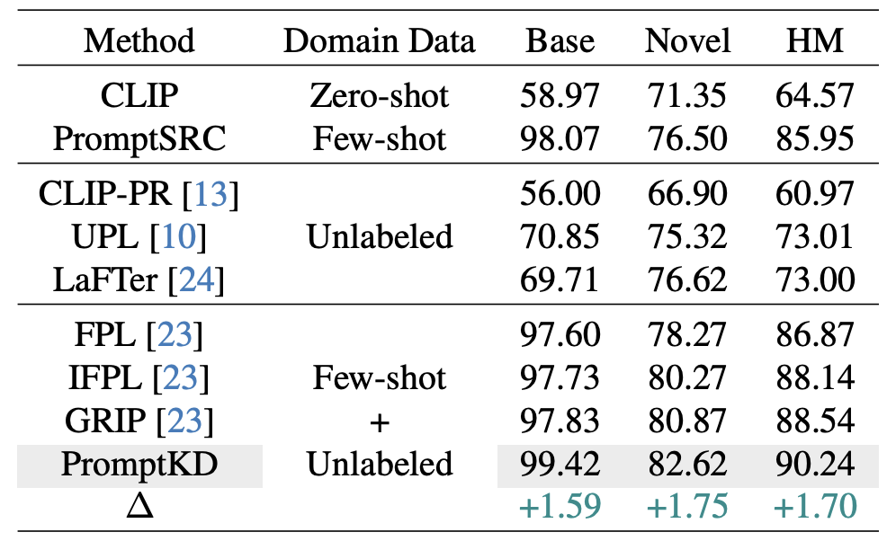
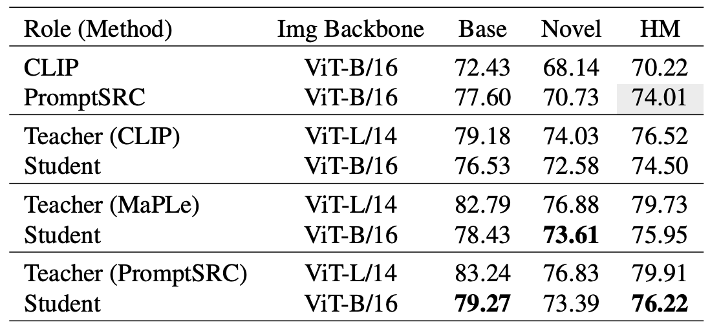

Figure 1. Architecture comparison between classic KD paradigm for CLIP (likewise CLIP-KD) and our PromptKD.
(a) Classic KD methods perform distillation between independent teacher and student models.
(b) PromptKD breaks the rules of teacher-student independence.
We propose to reuse the previously well-trained text features from the teacher pre-training stage and incorporate them into the student image encoder for both distillation and inference.

Figure 2. An overview of our PromptKD framework.
(a) We first pre-train a large CLIP teacher model with labeled training images.
(b) Reuse the existing higher-quality teacher text features for unsupervised prompt distillation.
(c) The well-trained student and pre-stored teacher text features are utilized for final inference.
Abstract
Prompt learning has emerged as a valuable technique in enhancing vision-language models (VLMs) such as CLIP for downstream tasks in specific domains.
Existing work mainly focuses on designing various learning forms of prompts, neglecting the potential of prompts as effective distillers for learning from larger teacher models.
In this paper, we introduce an unsupervised domain prompt distillation framework, which aims to transfer the knowledge of a larger teacher model to a lightweight target model through prompt-driven imitation using unlabeled domain images.
Specifically, our framework consists of two distinct stages. In the initial stage, we pre-train a large CLIP teacher model using domain (few-shot) labels.
After pre-training, we leverage the unique decoupled-modality characteristics of CLIP by pre-computing and storing the text features as class vectors only once through the teacher text encoder.
In the subsequent stage, the stored class vectors are shared across teacher and student image encoders for calculating the predicted logits.
Further, we align the logits of both the teacher and student models via KL divergence loss, encouraging the student image encoder to generate similar probability distributions to the teacher through the learnable prompts.
The proposed prompt distillation process eliminates the reliance on labeled data, enabling the algorithm to leverage a vast amount of unlabeled images within the domain.
Finally, the well-trained student image encoders and pre-stored text features (class vectors) are utilized for inference.
To our best knowledge, we are the first to (1) perform unsupervised domain-specific prompt-driven knowledge distillation for CLIP, and (2) establish a practical pre-storing mechanism of text features as shared class vectors between teacher and student.
Extensive experiments on 11 recognition datasets demonstrate the effectiveness of our method.
Highlights
(1). A novel two-stage unsupervised prompt distillation framework for Vision-Language Models.
(2). Reuse high-quality teacher text features instead of training the student's own text encoder.
(3). Distillation on large amounts of unlabeled domain images using soft labels provided by teacher.
(4). PromptKD outperforms all existing prompt learning methods on 11 diverse recognition datasets.
Advantages
(1). We provide an efficient and simple CLIP distillation framework that can compress the knowledge of the ViT-L/14 CLIP model into the smaller ViT-B/16 CLIP model through prompt distillation.
Notably, after distillation, the smaller ViT-B/16 CLIP model even achieves better performance than the vanilla ViT-L/14 CLIP on ImageNet-1K (77.62 HM vs. 76.52 HM).
(2). Due to the characteristics of CLIP, the text encoder only requires a single forward calculation for all classes.
Inspired by this, we propose to reuse the existing higher-quality teacher text features instead of training the student's own text encoder.
This approach not only maintains the quality of the text features but also significantly reduces computational costs and memory usage during training.
(3). The existence of the teacher CLIP model liberates us from the need for labeled training samples.
Learning from large amounts of unlabeled domain images, which is easily accessible, allows the prompt to learn richer and more generalized domain representations.
This significantly enhances student performance and makes our method easier to apply in real world scenarios.
Experimental Results
Base-to-Novel Experiments
Table 1. Comparison with existing state-of-the-art methods on base-to-novel generalization.
Our PromptKD demonstrates strong generalization ability and achieves significant improvements on 11 recognition datasets given the ViT-B/16 image encoder of the CLIP model.
The symbol △ denotes the performance improvement compared to the previous SOTA method.

Figure 3. Harmonic mean (HM) comparison on base-to-novel generalization.
Cross Dataset Experiments

Table 2. Comparison of PromptKD with existing advanced approaches on cross-dataset benchmark evaluation.
Based on our pipeline, we perform unsupervised prompt distillation using the unlabeled domain data respectively (i.e., the transductive setting).
The source model is trained on ImageNet. "ZSL" denotes the setting type for Zero-Shot Learning.
Comparison with Other Methods

Table 3. Comparison with existing works using unlabeled data on the Flowers102 dataset. Our method performs better than previous
methods.
Teacher Pre-training Methods

Table 4. Comparison of different pre-training methods. Teacher
pre-training with PromptSRC brings the best student performance. Notably,
any type of teacher model can enhance the student model with a non-trivial improvement.
Distillation with Different Teachers
Figure 4. Comparison of distillation results for pre-trained teachers with different capacities.
Better teachers lead to better distillation performance.